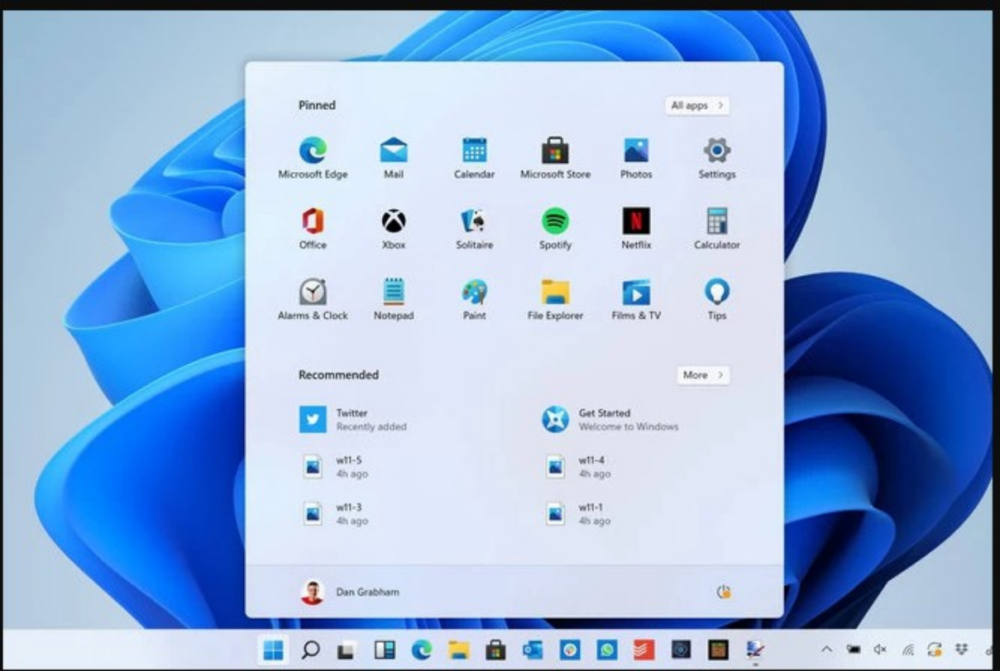
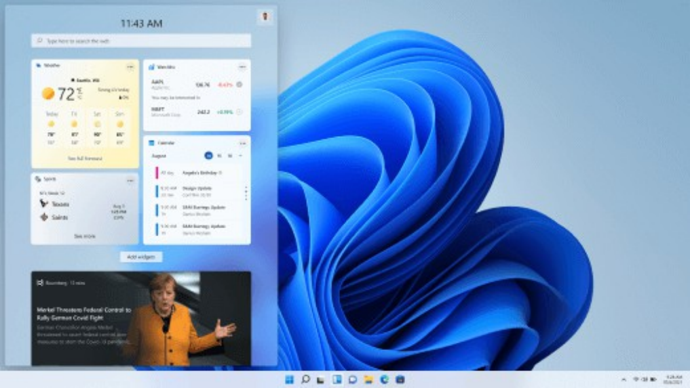
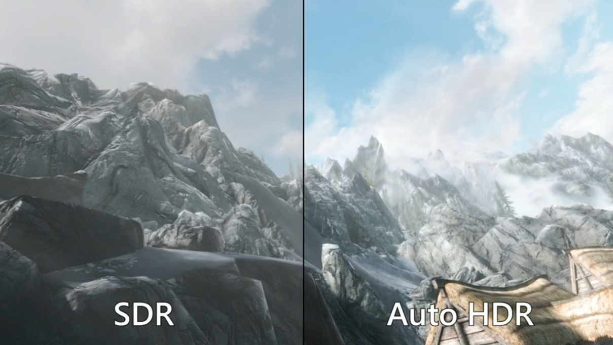

Funionalidades nuevas
Windows 11 incorpora un nuevo diseño de menú de inicio y barra de tareas, lo que supone una actualización en su interfaz.
La nueva barra de Widgets puede cambiar de tamaño y es el sustituto de los mosaicos en vivo de Windows 10, lo más característico de esto es que se espera que haya un gran número de opciones porque se permite que los desarrolladores puedan contribuir a esta herramienta.
Barra de tareas
En cuanto a la barra de tareas, el cambio que ha implementado Windows 11 es que ahora los iconos aparecen centrados de forma predeterminada, aunque incorpora la opción de desplazarlos a la izquierda. A diferencia de anteriores versiones de Windows, en esta versión la barra de tareas aparece anclada al borde inferior, sin posibilidad de anclarla al borde superior o a cualquiera de los laterales. También se incluye una nueva área de widgets e ícono en la barra de tareas.
Menú de inicio
 Otra novedad es el menú de inicio, que ahora tiene un diseño más parecido al lanzador de aplicaciones, con unas esquinas más redondeadas y controles de ajuste que incluye, entre otras opciones, fijar una ventana en un lugar de la pantalla que elija el usuario, además, también incluye una nueva configuración de Windows. También mostrará los archivos a los que más se accede.
Ventanas
Ahora se pueden organizar las ventanas abiertas de más formas, cuadrados, ventanas más largas... este diseño está inspirado en FancyZones, pero más fáciles de usar. Fuente
En lo que se refiere a las tablets, las ventanas instantáneas cambian de orientación si se cambia la orientación de la tablet y los objetivos táctiles también se han hecho más grandes que sean más fáciles a la hora de tocarlos.
 Windows 11 ahora permite diferentes configuraciones y almacenará las preferencias del usuario en cuanto a la posición de las ventanas en una pantalla externa y el usuario tendrá acceso a los diferentes diseños
Iconos/Aplicaciones
Otra actualización que incorpora Windows 11 con respecto a Windows 10 es el aspecto de algunos iconos, aunque esto no afecte a la funcionalidad.
Las aplicaciones de Android ahora podrán instalarse en Windows a través de Microsoft Store, que también tendrá un nuevo diseño. Este proceso no se va a realizar a través de Google Play, sino que se hará a través de Amazon Store, lo que puede suponer problemas y además, tendremos que contar con una cuenta de Amazon para hacerlo.
Microsoft Teams irá incorporado en el sistema operativo y se le dará preferencia por encima de Skype, que queda olvidado en esta nueva versión de Windows, aunque Microsoft Teams no estará instalado de forma predeterminada. Fuente
Además, Microsoft ha cambiado en cuento a las aplicaciones permitidas, ahora no solo aceptarán las aplicaciones que provengan de la tienda nativa, sino que ha ampliado el tipo de aplicaciones que acepta, es tan flexible que incluso acepta aplicaciones que utilicen sus propias formas para aceptar pagos de clientes.
Mejoras gráficas orientadas a videojuegos
 En cuanto a los juegos, Windows 11 ahora admite Auto HDR de Xbox Series X, que permite agregar HDR a los juegos creados para DirectX 11 o posterior. Auto HDR es una función que está disponible ya en las consolas de Microsoft y que añade de forma automática HDR (técnicas que permiten un mejor rango de luminosidad entre las zonas más claras y más oscuras de una imagen) en todos aquellos juegos que no lo soportan, mejorando así la visualización